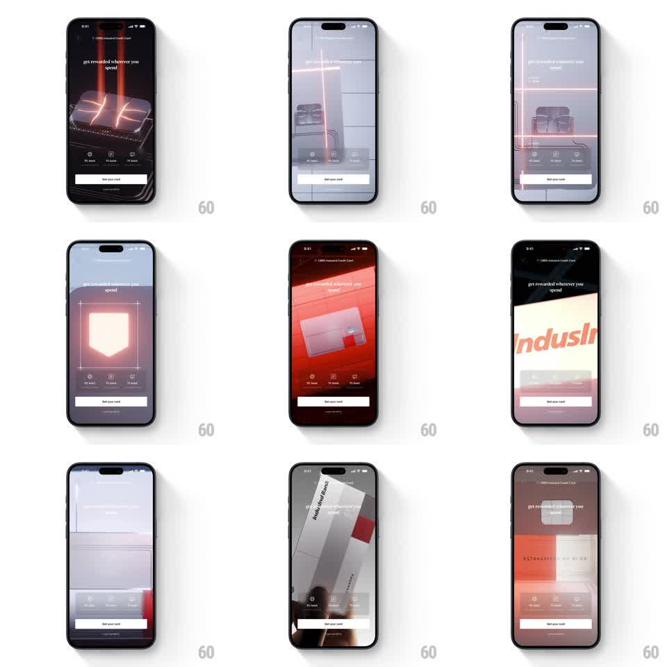

Media
Frame-by-frame

Rebuild this animation 1:1: CRED's IndusInd card intro film - a dark cinematic macro sequence: light streaks rake across the metal card, a red laser scans it, a shield outline ignites, and the bank logo lands in a final macro cut.

Rebuild this animation 1:1: CRED's IndusInd card intro film - a dark cinematic macro sequence: light streaks rake across the metal card, a red laser scans it, a shield outline ignites, and the bank logo lands in a final macro cut.
## Integration
Integration: stack-agnostic spec - springs given as stiffness/damping, timed motions as duration + curve; map every value to your framework and animation library of choice.
## Scene
Full-screen cinematic on the card page's hero ("get rewarded wherever you spend" overlay with perk icons and a "Get your card" button on top): macro shots of the metal card - brushed texture with light streaks, the chip under a red scanning beam, a glowing shield outline, a red-lit card face, and a final "IndusInd Bank" logo macro.
## Motion spec
Pattern: cinematic laser-scan product intro with hard macro cuts.
- Beat 1: light streaks sweep across the dark card texture (diagonal, 800ms, staggered 150ms, additive glow).
- Beat 2: a red laser line scans the chip vertically (600ms, linear), leaving a fading scan trail; the chip's contacts glint as the beam passes (opacity flashes, 100ms each).
- Beat 3: a shield outline draws itself in red light over a pale field (stroke draw-on, 700ms) then pulses once (glow bloom 0 -> 1 -> 0, 400ms).
- Beat 4: the card face under red light tilts slowly (rotateY -10 -> 10 degrees, 1.2s) with specular highlights tracking the tilt.
- Beat 5: hard cut to the "IndusInd Bank" macro - the logo rakes into focus (blur 8px -> 0, 400ms) as the sequence loops back to Beat 1 with a cross-dissolve (300ms).
- Cuts between beats are hard except the loop point; each beat holds its final frame ~300ms before cutting.
## Calibration
- Color story: gunmetal and white light, red reserved for the laser and shield - the brand accent appears only as light.
- The overlay UI (headline, perks, button) is static and dimmed; the film is the motion.
## Reduced motion
A single slow light sweep over the static card hero (1.5s), then hold.
## Don't miss
- The laser scan must intersect real card geometry - it clips at the chip's edges.
- The loop dissolve is the only soft transition; every other cut is a hard cinematic cut.